<mat-toolbar>
  

  <div class="navMenu">
    <a (click)="loadLogRun()">Add Run</a>
    <a (click)="loadRunLog()">Run Log</a>
    <a (click)="loadGallery()">Gallery</a>
  </div>
</mat-toolbar>

<router-outlet class="mainBody"></router-outlet>
